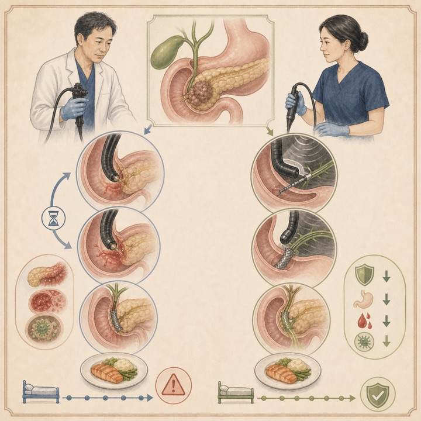
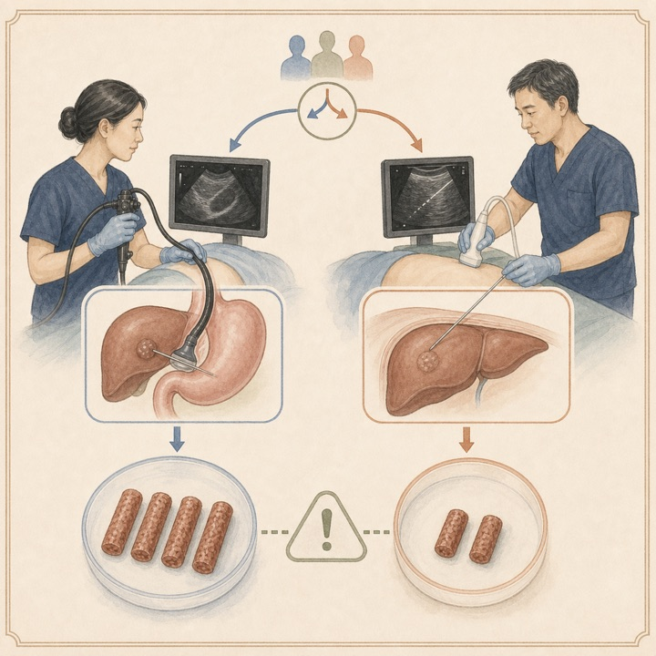
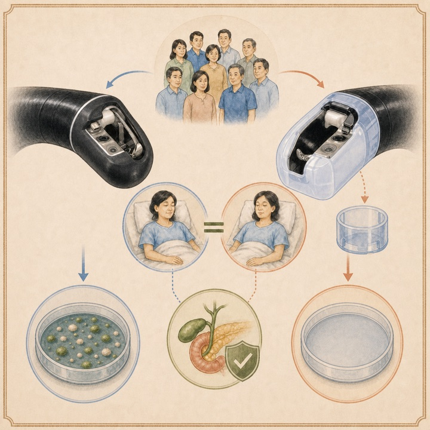
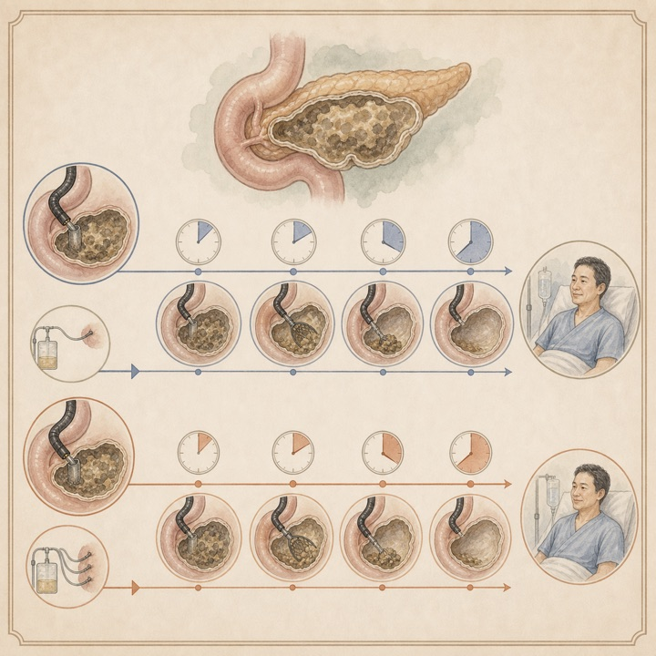
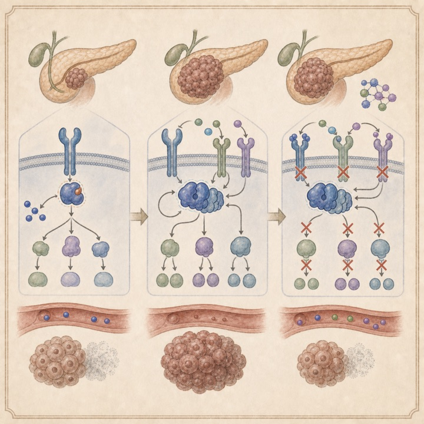
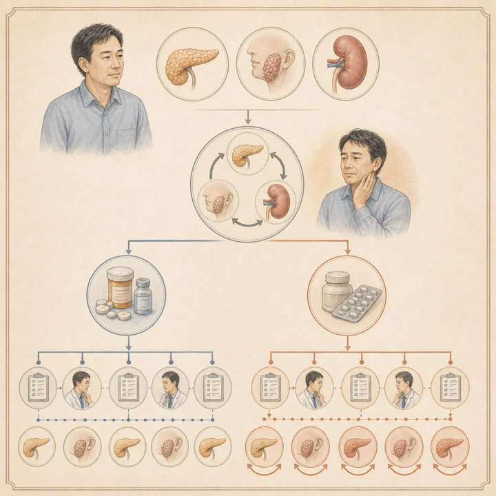
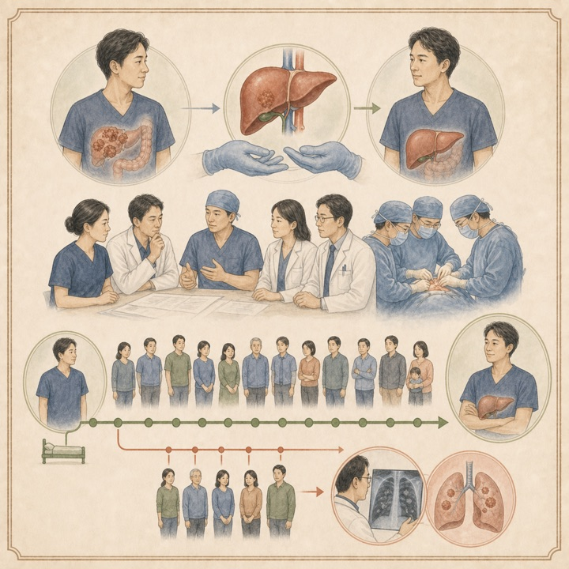

困難胆管挿管では早期EUS-BDが有害事象を半減
AJG / Q129施設・PS matching
遠位悪性胆道閉塞939例のマッチ後解析で、有害事象は高度ERCP 18.2%に対し早期EUS-BD 9.3%でした。
Tokai University Pancreatobiliary Group
This Week's Pancreatobiliary Research Highlights
臨床的重要性、研究デザイン、対象規模、診療への応用可能性を基準に4報を選定しました。IFとJCR quartileは2025年値（2026年公表）を参照しています。
遠位悪性胆道閉塞939例のマッチ後解析で、有害事象は高度ERCP 18.2%に対し早期EUS-BD 9.3%でした。
90例RCTで適格標本97.8%対64.4%。一方、EUS群では主に軽微な有害事象が多く、利点と負担の両面が示されました。
膵癌44例の治療前後ctDNAで59%にRAS経路の新規変化を認め、併用療法の合理的標的を提示しました。
厳格選択された25例の全生存期間中央値は128.2か月。少数単施設ながら長期治癒可能性を示しました。
日本語: 遠位悪性胆道閉塞10,738件のERCP中、標準挿管不成功は19.2%でした。胆管径12 mm超の困難例を1:2でマッチ後、早期EUS-BD 313例と高度ERCP 626例を比較すると、有害事象は9.3%対18.2%、技術的成功は95.9%対82.0%で早期EUS-BDが良好でした。臨床的成功は同等です。専門施設による後方視的選択例であり、一般化には術者経験と救済体制を考慮する必要があります。
English: In matched patients with difficult cannulation and a dilated duct, early EUS-BD was associated with fewer adverse events (9.3% vs 18.2%) and higher technical success (95.9% vs 82.0%) than advanced ERCP techniques, while clinical success was similar.

日本語: 単施設90例をEUS-LBと経皮的肝生検に1:1割付しました。総組織長15 mm以上かつ完全門脈域8個以上の適格標本は97.8%対64.4%で、EUS-LBは非劣性だけでなく優越性も示しました。組織長と門脈域数も大きく上回りましたが、有害事象は26.7%対4.4%でEUS群に多く、ほとんどは軽微でした。標本量の優位性を、細片化や処置負担と併せて評価すべき結果です。
English: EUS-LB achieved the prespecified adequacy endpoint in 97.8% versus 64.4% with percutaneous biopsy and yielded substantially longer specimens with more portal tracts. Adverse events were more frequent with EUS-LB, although almost all were minor.

日本語: 連続1,039例を対象に、ディスポーザブル起上装置キャップ付き鏡318例と従来鏡721例を比較しました。多剤耐性菌関連のERCP後胆管炎は両群2.5%で差がなく、全胆管炎、技術的成功、処置時間も同等でした。一方、再処理後培養では従来鏡のみに微生物汚染を認めました。微生物学的清浄性が個々の患者転帰改善へ直結するとは限らない点を示す、実装上重要な陰性研究です。
English: Disposable elevator-cap duodenoscopes eliminated detectable post-reprocessing microbial growth but did not reduce MDR-associated or overall post-ERCP cholangitis. The study highlights the gap between microbiologic and patient-level outcomes.

日本語: 8研究745例を統合し、早期DENと遅延DENで臨床的成功、技術的成功、死亡、有害事象に有意差はありませんでした。RCTのみでは早期DENで経皮ドレナージ追加が少ない可能性がありました（RR 0.44）。ただし大半のアウトカムはGRADEでvery low certaintyであり、「同等」と断定するより、患者状態と施設経験に応じた個別化を支持する結果です。
English: Early and delayed DEN showed similar clinical success, technical success, mortality, and adverse-event rates. Early DEN may reduce adjunctive percutaneous drainage, but certainty was very low for most outcomes.

日本語: RAS変異転移性膵癌の第I/II相試験44例で治療前後ctDNAを比較し、26例（59%）に治療後RAS経路変化を認めました。KRAS増幅が16例（36%）と最多で、RTK、MAPK、PI3K経路変化もみられました。二次KRAS変異は認めず、前臨床モデルではDNA損傷応答、RTK、G12D選択的RAS(ON)阻害薬との併用が耐性を抑えました。臨床有効性を証明する研究ではなく、次の併用試験を設計するトランスレーショナル研究です。
English: Paired ctDNA showed treatment-emergent RAS-pathway alterations in 59% of patients, most commonly KRAS amplification. Concordant models suggested combination strategies, but these remain hypotheses requiring prospective clinical validation.

日本語: 初回再燃後12か月超追跡された259例を、ステロイド増量、免疫抑制薬増強、両者増強で比較しました。ステロイド＋免疫抑制薬増強は免疫抑制薬のみより再々燃が少なく（調整HR 0.29）、内臓病変で差が目立ちました。疾患活動性指標2以下かつIgG4 25%以上低下は再々燃なしを予測しました。無作為化比較ではないため、重症度・治療選択の交絡を残します。
English: Glucocorticoid-based intensification, particularly combined with immunosuppressants, was associated with fewer recurrent relapses than immunosuppressant adjustment alone. Observational treatment-selection bias remains important.

日本語: 肝外病変のない切除不能大腸癌肝転移25例を厳格に選択し肝移植後追跡しました。無再発生存期間中央値24.3か月、全生存期間128.2か月、再発後生存62.9か月でした。12例は中央値74か月無再発で、4例は10年以上無再発でした。最大15例が治癒に到達し得ると推定されましたが、少数・単施設で臓器配分への影響も含め、適応は極めて慎重に検討すべきです。
English: Highly selected patients with unresectable liver-only colorectal metastases achieved a median overall survival of 128.2 months; four remained relapse-free beyond 10 years. Small sample size, selection, and graft-allocation implications limit broad adoption.

ClinicalTrials.gov公式APIを2026年8月16日に検索し、8月10日〜16日に新規公開された胆膵関連研究11件と、診療・開発上重要な更新6件を掲載しました。一般固形癌のみの研究、無関係なEUS略語、PBCなど対象外の一致は除外しています。JRCTは検索していません。
| 新規｜肝移植感染予防 | NCT07759453 CPE保菌肝移植患者の標的型対標準周術期抗菌薬予防 2026-08-12公開 / stepped-wedge cluster randomized trial / 168例。 |
|---|---|
| 新規｜慢性膵炎 | NCT07755813 慢性膵炎に対するpirfenidone 2026-08-10公開 / 介入研究 / 60例。抗線維化薬の新規応用を検討します。 |
| 新規｜急性膵炎輸液 | NCT07756476 / SUSTAIN 一回拍出量に基づく急性膵炎輸液蘇生 2026-08-10公開 / 介入研究 / 80例。 |
| 新規｜慢性膵炎発癌 | NCT07762950 血液バイオマーカーと腸内細菌による膵癌リスク層別化 2026-08-13公開 / 観察研究 / 800例。 |
| 新規｜遺伝性膵癌 | NCT07765836 / EKLAVYA-HRD BRCA/PALB2欠損膵癌へのvilastobart＋retifanlimab 2026-08-14公開 / 第II相 / 40例。 |
| 新規｜RAS阻害併用 | NCT07756281 進行膵癌に対するSNV1521＋RAS阻害薬のfirst-in-human試験 2026-08-10公開 / 第I相 / 40例。 |
| 新規｜膵癌免疫環境 | NCT07765316 膵癌の病的骨髄球系造血を標的とする観察研究 2026-08-14公開 / 観察研究 / 100例。 |
| 新規｜胆道癌 | NCT07765433 進行胆道癌のivonescimab＋gemcitabine/cisplatin対標準chemoimmunotherapy 2026-08-14公開 / 第II/III相無作為化試験 / 336例。 |
| 新規｜肝内胆管癌 | NCT07766187 / CODAH durvalumab＋histotripsy 2026-08-14公開 / 初期介入試験 / 12例。 |
| 新規｜EUS診断 | NCT07763561 充実性膵腫瘍に対するEUS detective flow imaging 2026-08-13公開 / 国際多施設前向き観察研究 / 48例。 |
| 新規｜ワクチン | NCT07763301 進行肝胆膵悪性腫瘍へのYMN-136ワクチン 2026-08-13公開 / 第I相 / 9例。 |
| 更新｜膵壊死 | NCT07488299 WON内視鏡治療におけるPPI継続の影響 2026-08-10更新 / 多施設RCT / 120例 / Recruiting。 |
| 更新｜KRAS G12D膵癌 | NCT07262567 GFH375対化学療法 2026-08-14更新 / 第III相 / 320例 / Recruiting。 |
| 更新｜一次治療PDAC | NCT07490301 / AndroMETa-PDAC-288 telisotuzumab adizutecan＋FOLFOX対標準治療 2026-08-14更新 / 第II/III相 / 900例 / Recruiting。 |
| 更新｜一次治療PDAC | NCT07562152 / MAPKeeper 301 atebimetinib＋gemcitabine/nab-paclitaxel 2026-08-14更新 / 第III相 / 510例 / Recruiting。 |
| 更新｜切除可能iCCA | NCT06050252 術前durvalumab＋gemcitabine/cisplatin 2026-08-14更新 / 第II相 / 27例 / Recruiting。 |
| 更新｜FGFR2胆管癌 | NCT03656536 / FIGHT-302 一次治療pemigatinib対gemcitabine/cisplatin 2026-08-11更新 / 第III相 / 167例 / Terminated。中止理由と結果の公開確認が重要です。 |
医療従事者向け情報： 本ページは医師・医学生・研究者向けの文献整理であり、患者向け広告、診療ガイドライン、個別の診断・治療助言ではありません。掲載内容は公開時点の情報に基づき、原著論文・最新ガイドライン・各施設の方針をご確認ください。